Regulators Review Nasdaq
The Bank for International Settlements(BIS), Quarterly Review December 16, 2018*, published a scathing rebuke of Nasdaq comparing the Aas default [see RiskSnap’s analysis to the right] to the Lehman default. “Lehman had derivative portfolios at a number of CCPs across the world, and with one exception, these were settled within weeks of the default, September 15, 2008, without exhausting the collateral Lehman had provided”. In contrast, the auctioning of Aas’s position “resulted in a loss of E114 million in excess of the collateral Aas had provided”.
JPMorgan's Excessive Collateral
Although the article in the Review tends to paint the Lehman resolution as “relatively balanced”, in fact JPMorgan as Lehman’s main clearing bank, is cited elsewheres as collecting excessive collateral. In January, 2017 JPMorgan paid $1.42 Billion to Lehman creditors who maintained that JPMorgan received a windfall due to excessive collateral charged to Lehman. In February 2017, JPMorgan paid $797 million to Lehman who claimed JPMorgan had siphoned critical liquidity just before the bankruptcy. Lehman’s default is considered by many to have triggered global panic.
JPMorgan's Collateral Calculations
At the time JPMorgan changed their collateral method several times from face value, to triparty collateral haircuts, and to marking down substantially, credit derivatives used as collateral.
BIS Critique of Nasdaq
The BIS review criticizes Nasdaq for not maintaining enough collateral through stressed times and without a reliable long-term perspective of allowing orderly auctions over a number of weeks following the default. Nasdaq looked at a 99.2% percentile of the 2-day market movements over the previous year plus 25% of the biggest two-day movement that year. Power firms and other members were required to replenish funds within 2 business days or risked being declared in default. A correlation offset of 50% was provided on the very wrong assumption that prices would continue to move in parallel.
Implications
The central clearing of standardised OTC derivatives is a pillar of the G20 Leader’s commitments to reform OTC derivatives markets in response to the systemic 2008 financial crisis. Therefore, a significant error in collateral calculations by a central clearer such as Nasdaq is a magnet for regulatory attention. This is more so as OTC derivatives clearing has grown, it has become increasingly concentrated in a few CCPs. “The exposures of individual banks are also large, e.g. the notional amount of JPMorgan’s OTC derivatives exposures to CCPs is about $30 trillion.” There is justification for the BIS to express concern over the high concentration across both banks and CCPs of OTC derivatives.*Clearing risks in OTC derivatives markets: the CCP-bank nexus, Umar Faruqui, Wenqian Huang, Előd Takáts
Thoughts on Risk for the day
Oct 10 2022.
Pivotal Moment?

Turning points historically include: failure of Continental Illinois, 7th largest bank in the US in 1984 due to speculative energy loans; Lehman Brothers failure in Sep 2008 overwhelmed by Mortgage Back Securities. Morgan Stanley and Goldman Sachs were considered too big to fail and were bailed out by the Fed. Currently, Credit Suisse is having troubles due to Greensills and to loans to Archegos who was overinvested in Equity Swaps. Risk on Equity Swaps is to the next reset date, e.g. quarterly, for the equity price and the floating rate. Credit Suisse gave Archegos 10x leverage, compared with 4 to 5 times at Goldman according to Risk.net (Hadfield, Mourselas Apr 2021.
US National Debt

Comparisons are being made to the US 1980's inflation and interest rates which reached a high of 15.85%. The inflation in 1981 was 10.3% and is currently 9.1%. Sustainability of high interest rates is questionable due to the US National Debt which has increased 31x since then. In current dollars the interest cost per capita would be $14,742 on 31Tr debt vs $686 on 1Tr debt debt
HVaR Equity Options
In the Var as a Risk Measure section below, is included HVar on a Put on GOOG (Alphabet Inc.) sold short. The same considerations apply as for a long position on GOOG, however with Puts, the historical impact of daily changes in volatility and interest rates are applied. The worst case occurred 16 Mar 2020 where had the same changed occurred today, the loss on 100 shares would have been -$1925. The option is currently a 28 delta option but had the same changes in spot and volatility taken place, this call sold would have a delta of 72. With a 20 delta option a case might be made for a roughy -$400 loss. However, with the higher delta, the HVaR loss for the call is calculated as -$1126.
Crypto vs Established Products.

Protection provided in established products include Capital Requirements on banks, regulated by the BIS, and margin requirements on exchange traded products. LCH for example, must monitor the risk on $5 quadrillion (uncompressed) notional oustanding interest rate swaps. Hedge funds are regulated to provide investments to accredited investors.
Impact of Interest Rates.

The present value of a future cashflow is determined by applying a discount factor. The discounted amount is the value needed to generate the future cashflow given the interest rate. This can be applied to a series of cashflows. A simplication is to divide the cashflow by the interest rate. In this example, the present value of a series of annual flows of $1, is $100 if the interest rate is 1%. If the interest rate is 2.5% then the value becomes $40 or a 60% drop in value. A long-only fund managed by Tiger Global [which has AUM of US$125B(2022)) ended the 2nd quarter down 63.6% after fees.
Risky Periods
 Riskiest periods for the S&P 500 include the tech sector crash of 2000's, the Sub-Prime Crash of 2007-2008, Covid in March 2020, and lately crypto-currencies. An article on the Sub-Prime Crash, Back to the Future, can be found under the Resources tab.
Riskiest periods for the S&P 500 include the tech sector crash of 2000's, the Sub-Prime Crash of 2007-2008, Covid in March 2020, and lately crypto-currencies. An article on the Sub-Prime Crash, Back to the Future, can be found under the Resources tab.

Crypto Space Announcements. The chart lists from Jun 5 to-date public announcements by crypto lenders, crypto exchanges, miners and hedge funds that are material and detrimental to their valuation. Causes include significant staff reductions, fund withdrawal stoppages, trading suspensions, zero valuations, fines for money laundering and violations of cybersecurity regulations, credit exposure to a crypto fail, and a filing for bankruptcy.

The search for crypto yield. Yields rose from their depths (see Department of Treasury yields [DOT] in right panel)becoming competitive to zero-yield crypto holders. Some crypto traders offered amazing investment returns. However, this came with risk as it was based on a continuing bull market for crypto. Voyager promised investors 12%(1) returns and one of its investments was to 3AC for 3% to 10%. 3AC bought TerraUSD/Luna a stablecoin. Anchor promised 20% on UST Deposits. Withdrawals caused a run on Terra where the price is currently zero. Also 3AC invested in GBTC which allowed investors to gain exposure to Bitcoin which fell from a peak of 65,000 to 19,000 currently . BlockFi, a private company, liquidated 3AC for failing to meet margin calls but BlockFi was somewhat rescued by Sam Bankman-Fried who has the option to buy BlockFi in exchange for a credit facility. No such reprieve for Voyager Digital, a public company listed on the TSX, which filed for Ch 11 bankruptcy. (July 14, 2022)

“TSLA officially became part of the S&P with the 5th largest weighting in the index.The volatility of the stock has increased and risk based on expected shortfall is $18,103 (prev: $22,000) for 100 shares and margin based on HVaR 99 Percentile is $7,732 (Prev: $11,000). GME's HVaR Margin s $9,591. The values are based on RiskSnap calculations and are estimates of potential risk as of May 7, 2021.

“FANGMAN Market Cap is 30% of US GDP“ The FANGMAN stocks (AAPL, AMZN, FB, GOOG, MSFT, NFLX and NVDA have a market cap of 6.38T [June 26, 2020] and US GDP as of Jun 25 was 21.5Tr. A market weighted portfolio of $100,000 has a 120 day Expected shortfall of ($15,000) and HVaR risk of ($12,500). The accompanying chart shows where the HVaR percentiles fall. For a 99% percentile, out of 100 instances, one reading falls below the line. .

The FANGMAN stocks are highly correlated so there is really no diversification. In the chart, the correlation has been growing over the past 90 days. The correlation ranges from .67 [NFLX:AAPL} to .94 [AAPL:MSFT]. Holding the portfolio provides a lower volatility, currently 40% as compared to the most volatile FANGMAN stock, NVDA at 80% annualized volatility. A portfolio of the stocks would be subject to less stress than holding a single stock. The annualized volatility of NVDA suggests that in one year's time based on a current value of 366.20, NVDA's price could vary between 245 and 546 with a probability of 65%.
Housing Prices,Pelegrini, and the Greatest Trade Ever At a 2007 hedge fund conference in Nassau, a Paulson & Co presenter showed an interesting housing chart which has since stuck with me. In 2007, John Paulson became world-famous by shorting the US housing market by betting against mortgage backed credit default swaps. His firm made $14Billion and Mr. Paulson himself made $4 Billion on this one trade alone. This chart has been turning around since January and the drop in the housing stocks below is, despite COVID-19, a recovery from the depths. The recovery was supported by the drop in interest rates see treasury curve to the right. It remains to be seen though, how COVID19 will impact the wage portion. (Sep 4, 2021 Update:) Since the beginning of Covid to June 2021 there is a remarkable rise in housing prices, with inflation adjusted wages playing catch-up. From the black chart, using the same premise, a long US housing market is favoured.
At a 2007 hedge fund conference in Nassau, a Paulson & Co presenter showed an interesting housing chart which has since stuck with me. In 2007, John Paulson became world-famous by shorting the US housing market by betting against mortgage backed credit default swaps. His firm made $14Billion and Mr. Paulson himself made $4 Billion on this one trade alone. This chart has been turning around since January and the drop in the housing stocks below is, despite COVID-19, a recovery from the depths. The recovery was supported by the drop in interest rates see treasury curve to the right. It remains to be seen though, how COVID19 will impact the wage portion. (Sep 4, 2021 Update:) Since the beginning of Covid to June 2021 there is a remarkable rise in housing prices, with inflation adjusted wages playing catch-up. From the black chart, using the same premise, a long US housing market is favoured.
 Mr. Paulson believed that housing prices were decelerating and Paolo Pellegrini, the analyst who worked with Mr. Paulson, developed a housing price vs wage chart. The chart above is similar and shows the year over year change in the seasonally adjusted housing price index divided by the inflation-adjusted hourly wage growth. The chart above relates to wages, a more direct approach than yields alone,
Mr. Paulson believed that housing prices were decelerating and Paolo Pellegrini, the analyst who worked with Mr. Paulson, developed a housing price vs wage chart. The chart above is similar and shows the year over year change in the seasonally adjusted housing price index divided by the inflation-adjusted hourly wage growth. The chart above relates to wages, a more direct approach than yields alone,

The U.S. Federal Reserve has become resolved to bring inflation down. Yields have increased sharply over the last half year, short term rates doubled in the past 3 months. Possibly the future is reflected in share price change since the three S&P500 homebuilding companies below have dropped 23 to 33% particularly noticeable when compared to the stellar gains Jan 2019 to Jan 2022.
| D.R Horton (DHI) | Lennar Corporation (LEN) | NVR Inc (NVR) | ||
|---|---|---|---|---|
| 02-Jan-2019 | 34.69 | 39.757 | 2420.82 | |
| 2-Jan-2022 | 104.64 | 110.84 | 5757 | |
| Change | 202% | 179% | 138% | 30-Sep-2022 | 67.35 | 74.55 | 3987.08 |
| Change | -35.64% | -32.74% | -30.74% |
Nordic Power Blowout and Risk
Einer Aas, a private trader and Nasdaq Clearing Member had bet on the German-Nordic spread narrowing. However, German prices spiked on CO2 cost and Nordics fell on rain. On Monday, September 10, 2018 Mr. Aas received an intraday margin call but could not meet the requirement and was declared to be in default Sep 11 2018.
 Waterfall Within 48 hours of the default, Nasdaq Clearing closed-out the contracts consuming Eur 7M of Nasdaq Junior Capital and Eur107m of clearing members funds (65% of the default fund). Since this is a significant loss to a clearing exchange and as RiskSnap provides HVaR software, we provide a risk analysis of the position using HVaR. Nasdaq Clearing uses a proprietary SPAN® model for their commodity margining.
Waterfall Within 48 hours of the default, Nasdaq Clearing closed-out the contracts consuming Eur 7M of Nasdaq Junior Capital and Eur107m of clearing members funds (65% of the default fund). Since this is a significant loss to a clearing exchange and as RiskSnap provides HVaR software, we provide a risk analysis of the position using HVaR. Nasdaq Clearing uses a proprietary SPAN® model for their commodity margining.
 Data It should be noted that for this analysis data from the European Commodities Clearing (ECC) (AG), the clearer for the European Commodities Exchange (EEX) AG, is used since ECC's data appeared to be more easily accessible. An assumption is that similar insights can be obtained. The front quarterly futures contracts of the ECC Nordic and German based power contracts are graphed above covering 3 years. Clearly, there was a widening in the spread during the August - September period. The closing prices on Nordic was 55.95 Sep 7th, and 51.5 Sep 10th; for German power, 61.06 and 62.56 resp. On a contract size of 2209 MWH the variation margin was €-13145
Data It should be noted that for this analysis data from the European Commodities Clearing (ECC) (AG), the clearer for the European Commodities Exchange (EEX) AG, is used since ECC's data appeared to be more easily accessible. An assumption is that similar insights can be obtained. The front quarterly futures contracts of the ECC Nordic and German based power contracts are graphed above covering 3 years. Clearly, there was a widening in the spread during the August - September period. The closing prices on Nordic was 55.95 Sep 7th, and 51.5 Sep 10th; for German power, 61.06 and 62.56 resp. On a contract size of 2209 MWH the variation margin was €-13145
 SPAN® Both Nasdaq Clearing and ECC use SPAN® for margining power futures. Generally, 2-day parametric VaR is used for SPAN® risk amounts. Nasdaq Clearing uses parametric VaR (variance analysis) and a 2 day holding period (HP)for each contract separately with a correlation offset of 50%. The ECC SPAN® result was €10884., a shortfall of 17%.
SPAN® Both Nasdaq Clearing and ECC use SPAN® for margining power futures. Generally, 2-day parametric VaR is used for SPAN® risk amounts. Nasdaq Clearing uses parametric VaR (variance analysis) and a 2 day holding period (HP)for each contract separately with a correlation offset of 50%. The ECC SPAN® result was €10884., a shortfall of 17%.
 RiskSnap Historical Simulation RiskSnap’s calculations are based on a historical simulation of the portfolio, taking into account both HVaR and expected shortfall (the tail of the HVaR calculations) for a stress period defined as the 365 day period over which the largest loss is experienced, and also for the current period which has been arbitrarily set as 90 days. Since historical simulation is used, long positions will have a different risk profile from short positions, unlike SPAN®.
The same 99.2% confidence intervals as Nasdaq’s was used. According to regulatory requirements no weighting is applied to the stress period. For the current period EWMA was used with a lambda weighting of 0.98. RiskSnap takes the worst case of the above 4 scenarios. The result was €11020, similar to the EEC's SPAN® margin.
RiskSnap Historical Simulation RiskSnap’s calculations are based on a historical simulation of the portfolio, taking into account both HVaR and expected shortfall (the tail of the HVaR calculations) for a stress period defined as the 365 day period over which the largest loss is experienced, and also for the current period which has been arbitrarily set as 90 days. Since historical simulation is used, long positions will have a different risk profile from short positions, unlike SPAN®.
The same 99.2% confidence intervals as Nasdaq’s was used. According to regulatory requirements no weighting is applied to the stress period. For the current period EWMA was used with a lambda weighting of 0.98. RiskSnap takes the worst case of the above 4 scenarios. The result was €11020, similar to the EEC's SPAN® margin.
 Concentration Although regulatory and legal restrictions prevented Nasdaq from divulging the percentage of the market that the trader held, there was a big impact on variation margin indicating a large position. In addition, a question and answer document by Nasdaq said that the position limit of 14,469,300 MWh was 50% of open interest for category German “other months”, and had been increased July 1st from 35% as at year-end 2017. A 2 day holding period is commonly used for futures due to perceived high liquidity. Some exchanges, however, when faced with concentration risk will increase the number of liquidation days. Using a 4 day HP, for example, would have increased margin to €15580 or enough to cover the variation margin and possibly force a reduction of holdings leading up to the crisis. It is not known what value Nasdaq or ECC uses in these cases.
Concentration Although regulatory and legal restrictions prevented Nasdaq from divulging the percentage of the market that the trader held, there was a big impact on variation margin indicating a large position. In addition, a question and answer document by Nasdaq said that the position limit of 14,469,300 MWh was 50% of open interest for category German “other months”, and had been increased July 1st from 35% as at year-end 2017. A 2 day holding period is commonly used for futures due to perceived high liquidity. Some exchanges, however, when faced with concentration risk will increase the number of liquidation days. Using a 4 day HP, for example, would have increased margin to €15580 or enough to cover the variation margin and possibly force a reduction of holdings leading up to the crisis. It is not known what value Nasdaq or ECC uses in these cases.
 Frequency of Parameter Update On Sep 28th, according to RiskSnap’s HVaR model, the stress period had shifted significantly due to the inclusion of current events. The risk was then € 17,690. However, ECC’s SPAN® value had remained unmoved. Nasdaq updates the parameters of the margin methodology on a monthly basis, perhaps ECC has as of Sep 28th not yet updated the parameters. RiskSnap searches for the stress period over the historical period for a portfolio of trades and does not require establishment of scenarios.
Frequency of Parameter Update On Sep 28th, according to RiskSnap’s HVaR model, the stress period had shifted significantly due to the inclusion of current events. The risk was then € 17,690. However, ECC’s SPAN® value had remained unmoved. Nasdaq updates the parameters of the margin methodology on a monthly basis, perhaps ECC has as of Sep 28th not yet updated the parameters. RiskSnap searches for the stress period over the historical period for a portfolio of trades and does not require establishment of scenarios.
| EUR | 10-Sep-2018 | 28-Sep-2018 |
|---|---|---|
| Variation Margin | -13143.6 | |
| SPAN Margin (ECC) | 10884 | 10407 |
| RiskSnap Margin - 2 day HP | 11020 | 17690 |
| RiskSnap Margin - 4 day HP | 15580 |
CONCLUSION: Regardless of margins specified by exchanges or other authorities it is prudent to run your own risk calculations to prevent blow-outs.
Chiming in on the FANG barrier
The Auto-Callable Contingent Coupon Barrier Notes Linked to the Lesser Performing of Four Equity Securities (a.k.a. "FANG barrier") was cited in FT Alphaville, July 20 by Dan McCrum with the challenge “Readers better able to price option values might chime in”. As we are interested in risk, we chime in on this interesting product.
 The FANG barrier is a July 1, 2021 note, whose superior coupon payments of 10.2% per annum and principal return are impacted by barriers. If any of the four stocks (Facebook, Amazon, Netflicks, Google) at any of the 12 quarterly coupon payment dates is 50% below their initial price then there is no coupon for that date, plus a loss of principal if the date is the maturity date where the principal returned is based on the return of the lowest returning stock as measured against the initial price. The maximum possible return is the principal plus 12 coupon payments of 2.55% each. The maximum possible loss is loss of all coupon payments plus the entire principal. An automatic call occurs if on any payment date from Dec 27, 2018, each of the stocks are greater than the initial price. This occurred Jun 29, 2020 and investors enjoyed a 10.2% annual return for 2 years. RBC issued $1,424,000 of this note June 29, 2019, with net proceeds of $1,391,960.
The FANG barrier is a July 1, 2021 note, whose superior coupon payments of 10.2% per annum and principal return are impacted by barriers. If any of the four stocks (Facebook, Amazon, Netflicks, Google) at any of the 12 quarterly coupon payment dates is 50% below their initial price then there is no coupon for that date, plus a loss of principal if the date is the maturity date where the principal returned is based on the return of the lowest returning stock as measured against the initial price. The maximum possible return is the principal plus 12 coupon payments of 2.55% each. The maximum possible loss is loss of all coupon payments plus the entire principal. An automatic call occurs if on any payment date from Dec 27, 2018, each of the stocks are greater than the initial price. This occurred Jun 29, 2020 and investors enjoyed a 10.2% annual return for 2 years. RBC issued $1,424,000 of this note June 29, 2019, with net proceeds of $1,391,960.
 RiskSnap priced the product as worth $1,359,000 July 20th, 2018 using Monte Carlo. On Sep 7th the value increased to 1,386,000. In the case of barrier options, volatility is a negative factor since there is more likelihood of getting “knocked out”. On the other hand time decay is positive since as maturity approaches, the risk of getting “knocked out” diminishes, which may have contributed to the increase in price. Other risk factors include correlation. As correlation diminishes there is more likelihood that one of the stocks will hit a barrier as they begin to behave independently of each other. To-date investors have earned an annualized rate of 10.2%.
RiskSnap priced the product as worth $1,359,000 July 20th, 2018 using Monte Carlo. On Sep 7th the value increased to 1,386,000. In the case of barrier options, volatility is a negative factor since there is more likelihood of getting “knocked out”. On the other hand time decay is positive since as maturity approaches, the risk of getting “knocked out” diminishes, which may have contributed to the increase in price. Other risk factors include correlation. As correlation diminishes there is more likelihood that one of the stocks will hit a barrier as they begin to behave independently of each other. To-date investors have earned an annualized rate of 10.2%.
Payments and Percent Change are tracked below..
| AMZN | FB | GOOG | NFLX | Action | |
|---|---|---|---|---|---|
| Initial Price (Strike) | 1660.51 | 195.84 | 1116.94 | 390.39 | |
| Barrier | 830.26 | 97.92 | 558.47 | 195.2 | |
| 27-Sep-2018 | 2012.98 | 168.84 | 1194.64 | 380.71 | 2.55% Coupon Paid |
| 27-Dec-2018 | 1461.64 | 134.52 | 1043.88 | 255.57 | 2.55% Coupon Paid |
| 27-Mar-2019 | 1765.69 | 165.86 | 1173.02 | 353.36 | 2.55% Coupon Paid |
| 27-Jun-2019 | 1904.25 | 189.5 | 1076.01 | 370.02 | 2.55% Coupon Paid |
| 27-Sep-2019 | 1725.45 | 177.10 | 1225.091 | 263.08 | 2.55% Coupon Paid |
| 27-Dec-2019 | 1869.805 | 208.1 | 1351.89 | 329.089 | 2.55% Coupon Paid |
| 27-Mar-2020 | 1900.10 | 156.79 | 1110.71 | 357.12 | 2.55% Coupon Paid |
| 29-Jun-2020 | 2680.38 | 220.64 | 1394.97 | 494.73 | Note is called |
Market Risk Factors
Yield Curves and Foreign Exchange
 BOC
BOC
 CADUSD
CADUSD
 DOT
DOT
 XAUUSD
XAUUSD
 BOE
BOE
 GBPUSD
GBPUSD
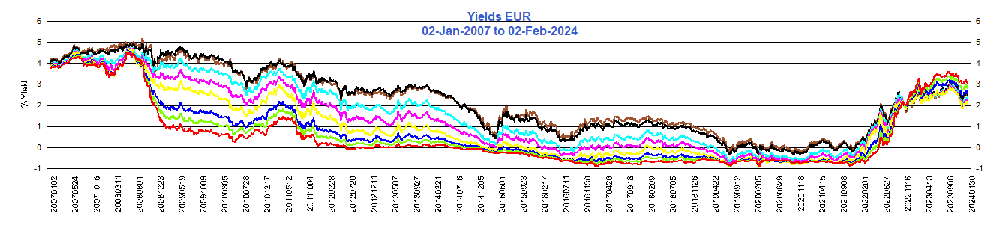
ECB
 EURUSD
EURUSD
 MOF
MOF
 JPYUSD
JPYUSD
 SNB
SNB
 CHFUSD
CHFUSD
Yield terms: 1 yr, 2 yr, 3 yr, 5 yr, 7 yr, 10 yr, 20 yr and 30 yr.
Volatility
Volatility
The scale for the volatility index is 544% compared to 144% for the S&P.
 S&P500.
S&P500.
 VIX.
VIX.
Volatility Surface - Equities
Surface values are implied from filtered option prices to be used at reader's discretion
Moody's has an inverted volatility smile, where option buyers are willing to pay more in volatility for ATM options.
 Moodys Corporation
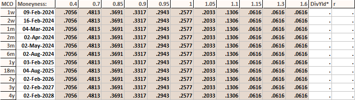
Moodys Corporation
Moodys Corporation
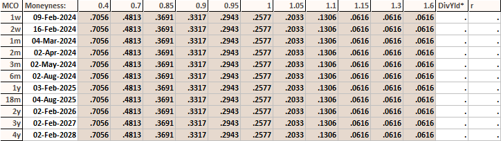
Moodys Corporation
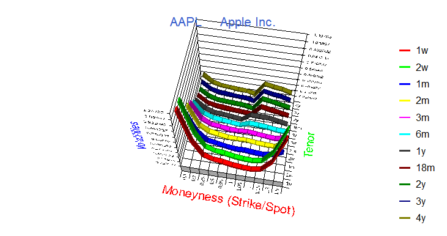
Apple Inc.
 Apple Inc.
Apple Inc.
 Netflix Inc
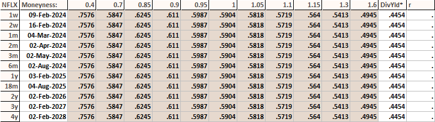
Netflix Inc
Netflix Inc
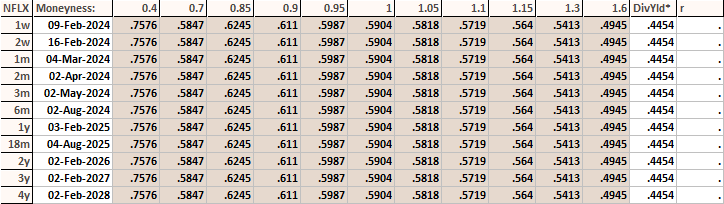
Netflix Inc
 Alphabet Corp
Alphabet Corp
 Alphabet Corp
Alphabet Corp
 Amazon.com Inc
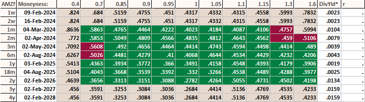
Amazon.com Inc
Amazon.com Inc
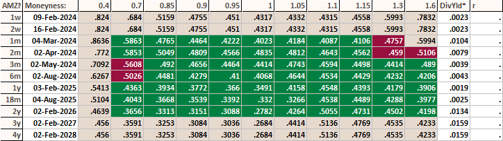
Amazon.com Inc
 Tesla Inc
Tesla Inc
 Tesla Inc
Tesla Inc
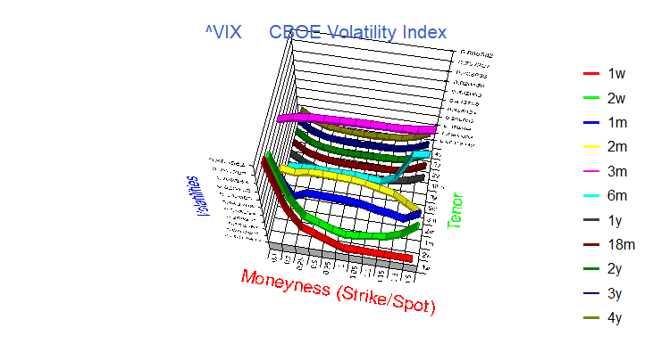
CBOE Volaility Index
 CBOE Volaility Index
CBOE Volaility Index
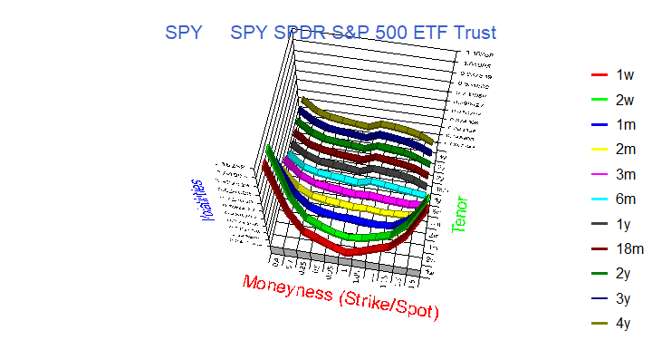
SPDR S&P 500 ETF Trust
 SPDR S&P 500 ETF Trust
SPDR S&P 500 ETF Trust
Volatility Surface - Foreign Exchange
Sterling (GBP) volatility is highly skewed in favour of puts on Sterling, particularly in the longer dates, perhaps anxiety related to Brexit. Swiss Franc volatility, in the short end at least, is neutral, reflecting CHF as a safe haven currency, in spite of Brexit. The Canadian dollar tends to favour calls due to oil exporters being US dollar sellers.
 CADUSD
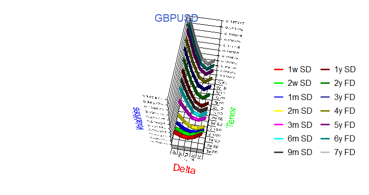
GBPUSD
CADUSD
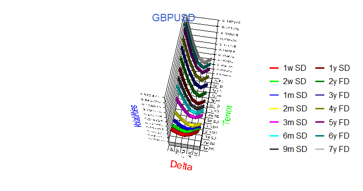
GBPUSD
 EURUSD
EURUSD
 JPYUSD
JPYUSD
 CHFUSD
CHFUSD
Correlations
The Correlation covers various risk factors (^GSPC is the S&P index). There is a large negative correlation between the S&P and the Volatility Index, VIX. (The Canadian dollar is quoted in conventional terms, ie. canadian dollar per USD dollar, currently around 1.30).

VaR as a Risk Measure
Value at Risk (VaR) is one of the most popular tools used in risk management and is incorporated within the Basel Accord for banking supervision. VaR is used by central counterparties (CCPs) for purposes of determining initial margin. VaR and Expected Shortfall (ES) are standard measures used by traders for setting risk limits and can be used by investors, traders and risk managers both for preventing panic selling (or buying) in periods of high volatility, and also preventing overreaching in periods of low volatility.
Our core solution is VaR.
A click on the chart icons below for various assets and sectors, will provide a graph where the one in one hundred chance (99th percentile) breach is visible below the Current VaR red line for both the stress period (one calendar year encompassing the worst change from Jan 2, 2007) and the latest 90 day period.